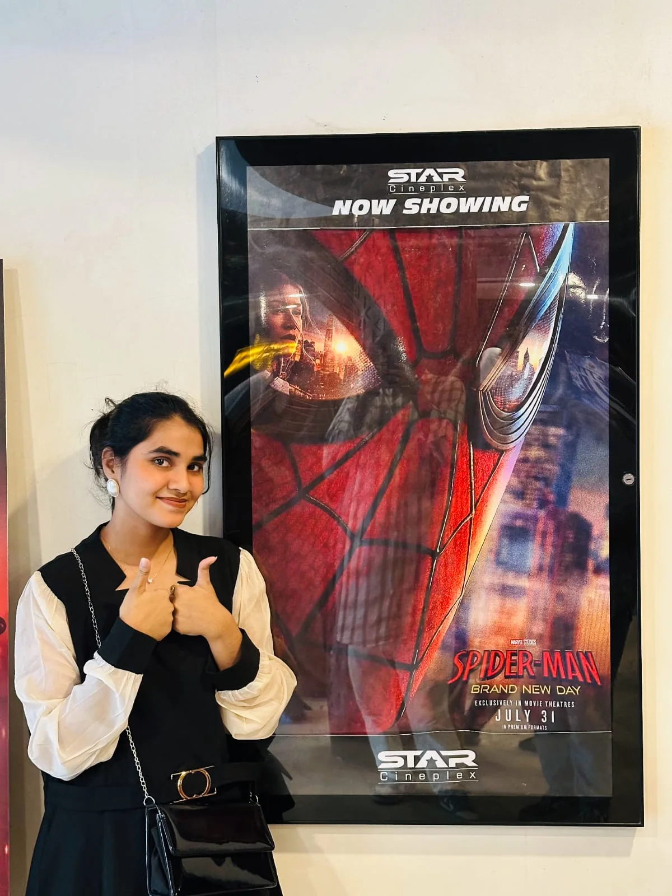
01
Movie days
You say “let’s watch something,” and I immediately turn it into an event in my head.
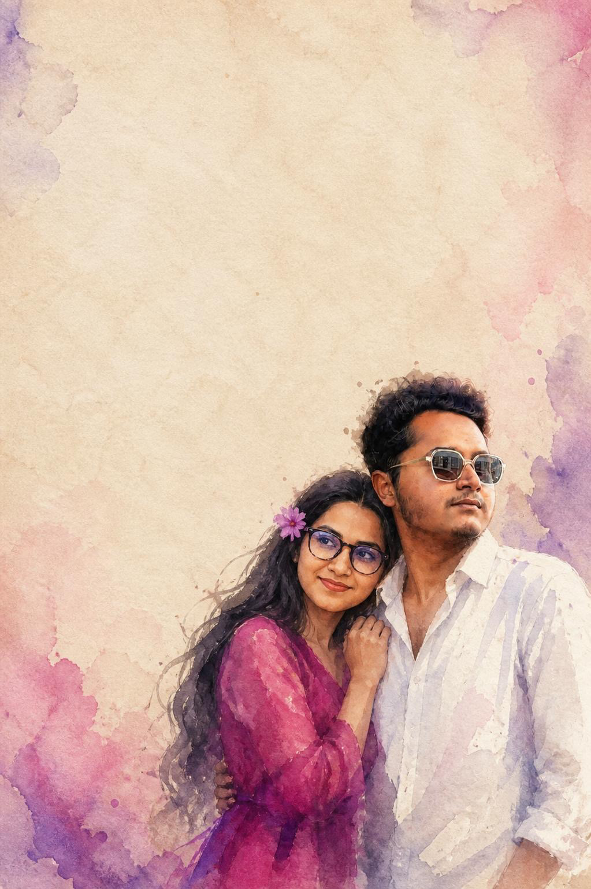
my favorite place is next to you ♡Not a post. Not a random message. Just a tiny place where I collected some of the versions of you I love, some of the moments I keep replaying, and a few things I probably say too much anyway. 😭❤️
six months later…
still staring ♡
same girl, completely different magic every time
Tap the pictures. I left something behind each one. ♡
Montreal ↔ Bangladesh, but somehow still us
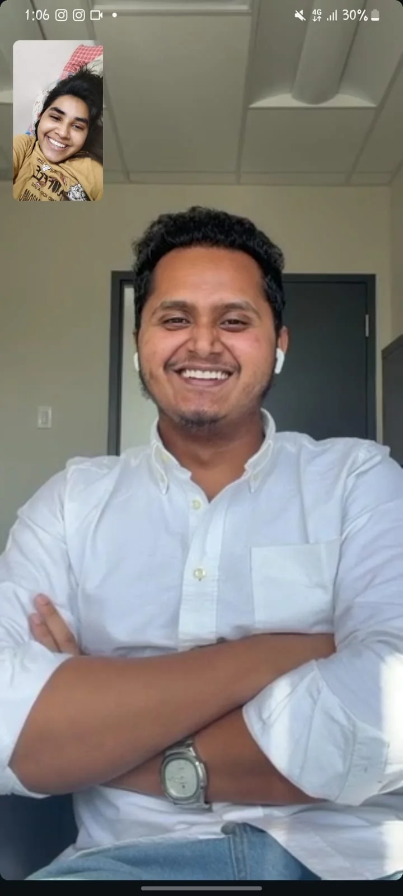
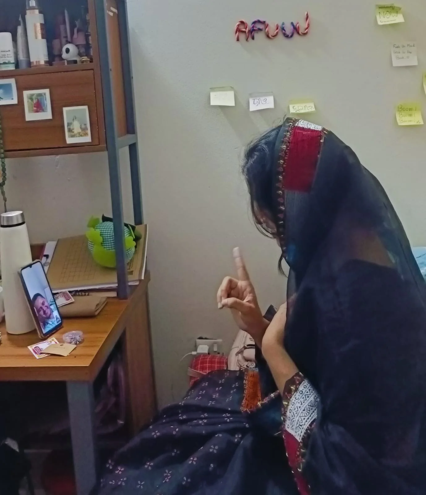
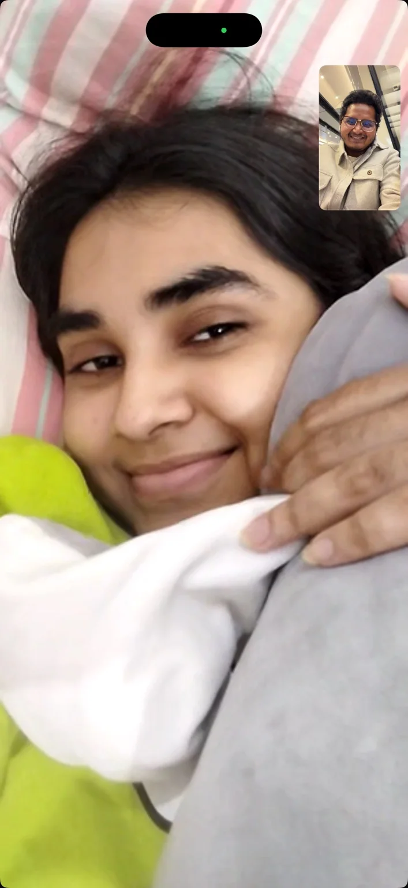
Some days it is ten minutes. Some days it turns into hours. I still wait for that little screen to light up with you.
I am filing an official complaint
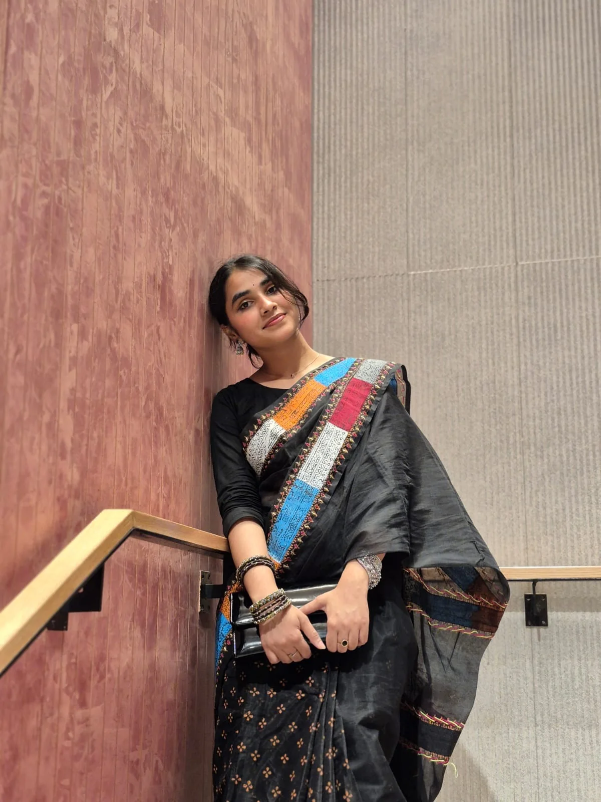
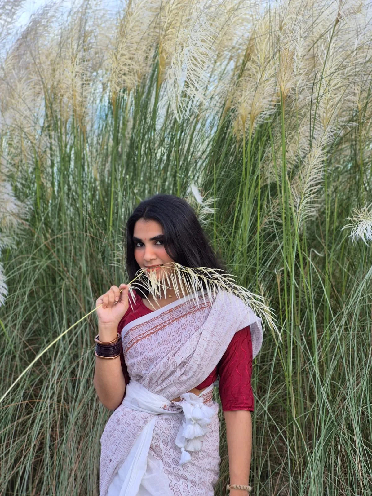
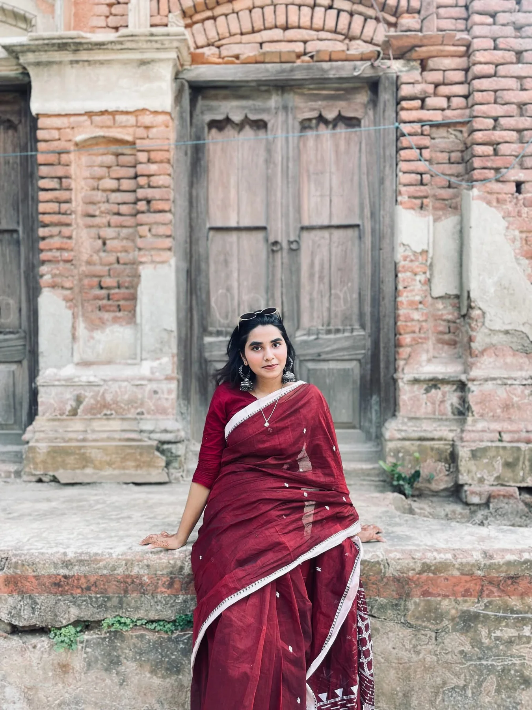
Graceful in one frame, dramatic in the next, and somehow you still expect me to act normal? Absolutely not.
apparently my brain keeps receipts

You say “let’s watch something,” and I immediately turn it into an event in my head.
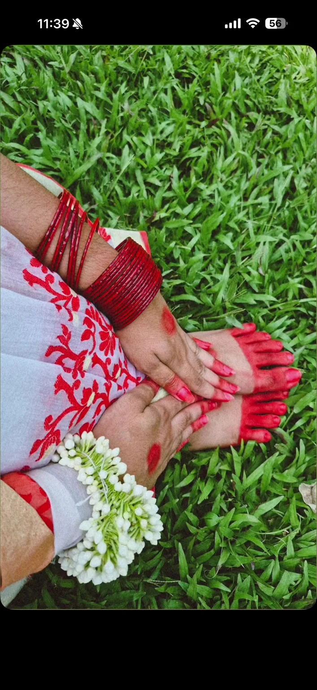
The bangles, the flowers, the way you style little things. I notice more than I say.
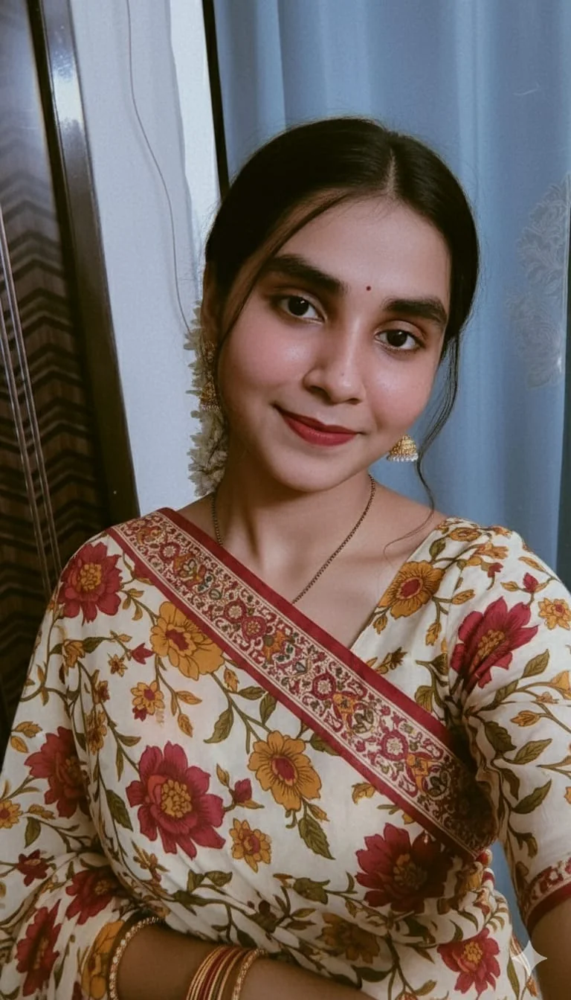
The one where you look calm and I instantly want to ask for the picture.
yes, this outfit deserved its own chapter
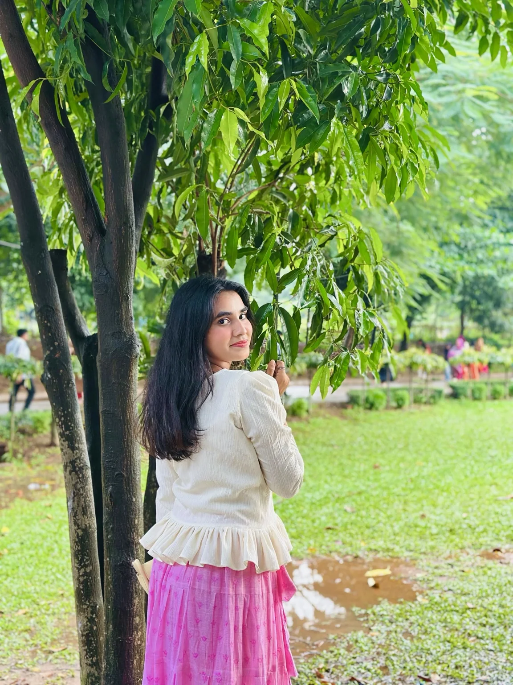
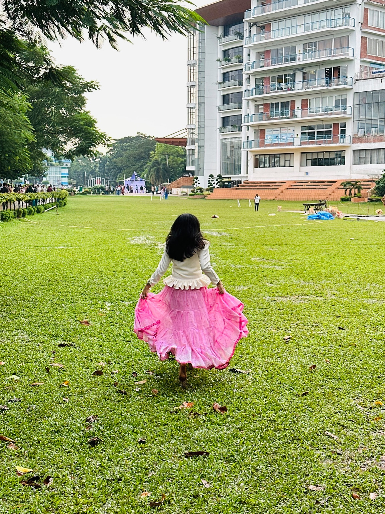
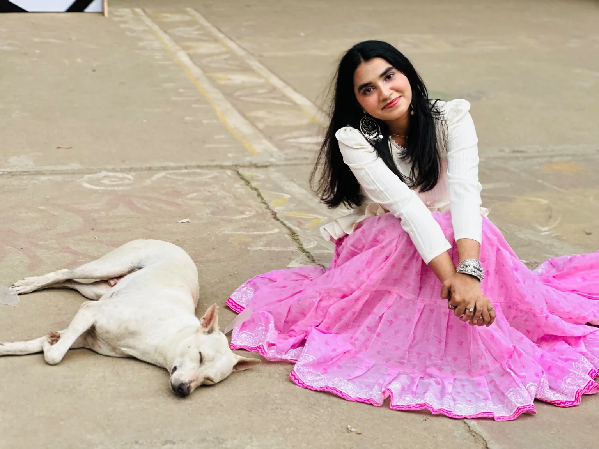
I remember imagining how this outfit would look on you. Seeing the real pictures was better than anything I could have imagined.
the very unofficial relationship report
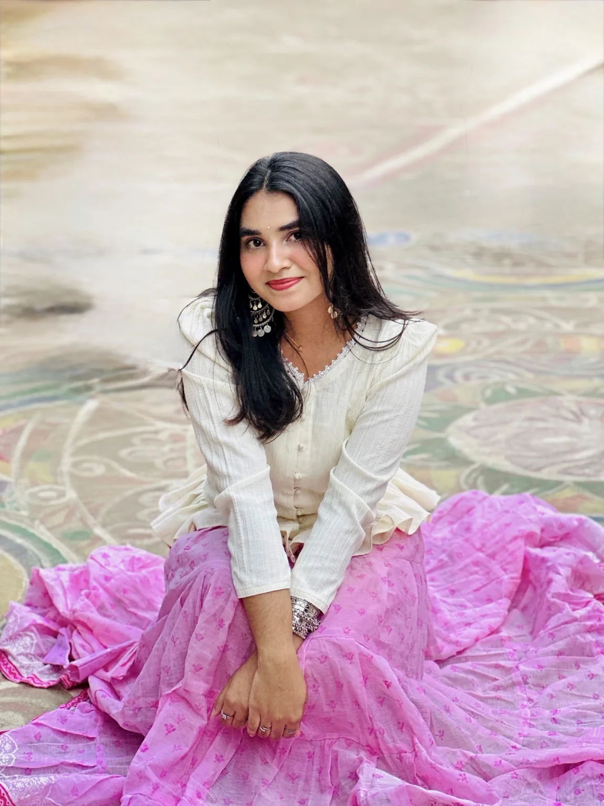
still my favorite menace ♡no polished speech. just me.
My love,
Sometimes I look at you and still wonder how one person became this important to me. You somehow became part of my everyday life without even trying. Now my days feel a little incomplete when I do not hear your voice, see your face, or know how you are doing.
I love the little things about you the most. Your smile, the way you talk when you are excited, your sleepy face, your random moods, your stubborn moments, and even the times when you annoy me a little. Somehow all of it just feels like you, and I have grown to love that person so much.
Being far away from you makes me wish for the simplest things. Sitting beside you, holding your hand, going somewhere together, sharing food, or just doing absolutely nothing while you are next to me. I think those ordinary moments with you would mean more to me than anything fancy.
I do not know what every day ahead of us will look like, but I know I want to keep knowing you, understanding you, making memories with you, and loving you a little better as time goes on.
You are very special to me my baby girl. More than I probably manage to say properly.
I love you, sweetie. ❤️
Yours,
Ariful
okay baby, one tiny question
Will you keep choosing us with me? ❤️
I have a feeling one button is about to misbehave…
And yes, I know I can be annoying. You are still stuck with a man who loves you a ridiculous amount. 😭❤️
okay, now I’m smiling like an idiot
Happy six months, baby girl. I don’t need perfect days. I just want us to keep learning each other, choosing each other, and making ordinary days feel like ours. I love you in all universe my baby girl.